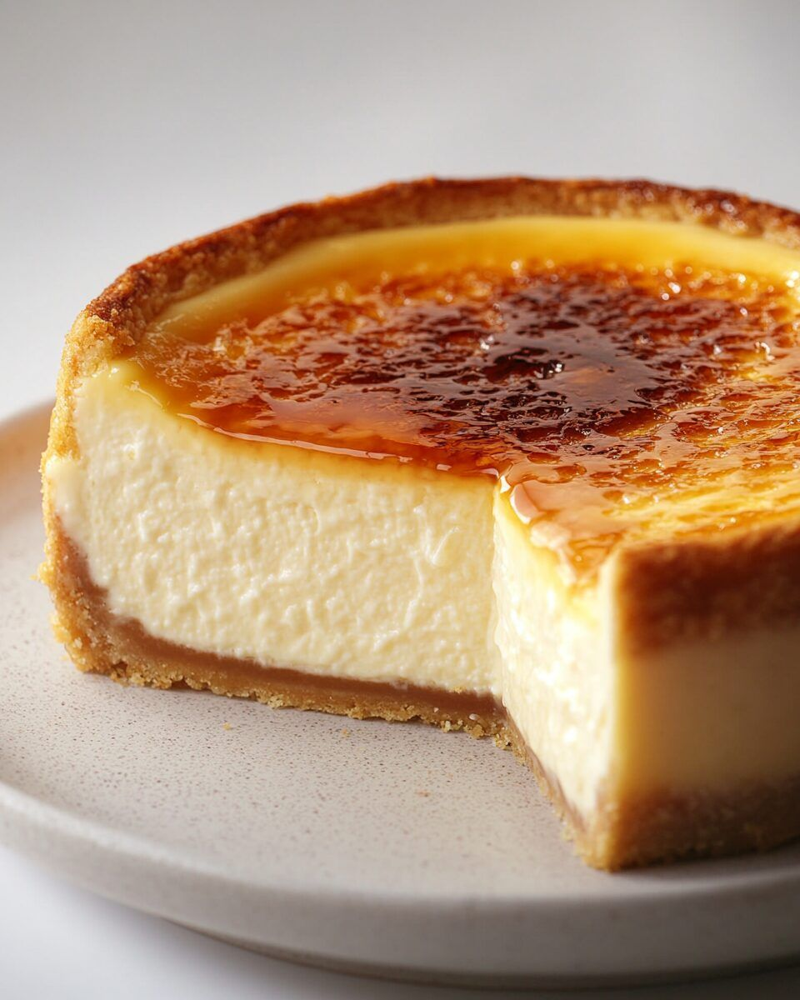

Crème brûlée cheesecake
Bron: sofiedumont.be
Beschrijving
De heerlijke smaken van crème brûlée en cheesecake in één taart, hoe zot is dat! Koekjesdeeg, vanille roomkaas vulling en crunchy topping...

Ingrediënten
- bretoense zandkoekjes - 250g
- gesmolten boter - 60g
- zout - 1 snuif
- 5 eieren
- roomkaas op kamertemperatuur - 100g
- fijne suiker - 150g
- merg van 1 vanillestok
- vanille-essence - 1kl
- room 40% - 250ml
Instructies
- Bekleed de binnenkant van je bakvorm met een band boterpapier en zet die dan op 2 vellen aluminium papier in kruis gelegd, plooi naar boven, doe er onderaan een strak touwtje rond en druk super goed aan, de folie mag 10 cm hoger komen dan de bakvorm, zodat je je vorm goed waterdicht maakt want hij moet au bain-marie gegaard worden. Plaats nu in een vlakke ovenschotel.
- Cutter de koekjes fijn met zout en voeg boter bij, laat kort draaien in robot en giet in je vorm. Verdeel egaal uit en druk aan, bak 15 min zonder water aan 180°C, laat afkoelen.
- Doe alle ingrediënten voor de vulling in een kom en mix tot een luchtig en glad beslag. Giet op de bodem, strijk egaal uit en steek opnieuw in de oven. Giet eerst min 3 cm water in de ovenschaal met taart in. Laat 1 uur bakken aan 175° en laat 2 u afkoelen in de oven.
- Laat hem daarna minimum een nacht opstijven in de koelkast. Haal de taart uit de bakvorm en zet op een taartschaal. Bestrooi de fijne suiker er egaal over en carameliseer de bovenkant met een bunzenbrander. Serveer onmiddellijk.